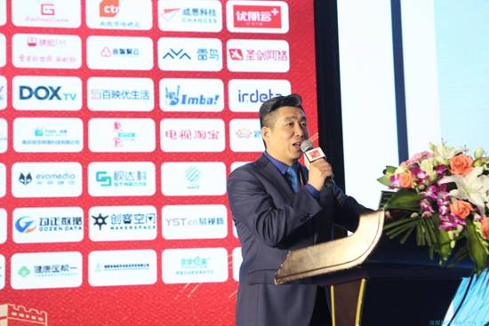
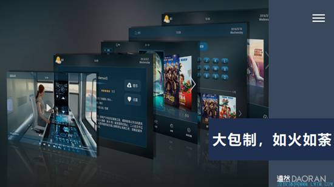
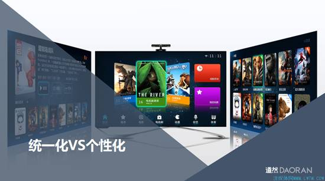
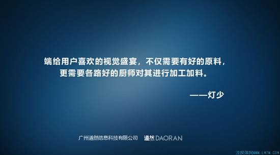

5月9-10日，以“聚合跨界力量，变革视听未来”为主题的流媒体网第十五届电视新媒体高峰论坛在西安举行。10日上午，在主题为“聚变2018——跨界融合，视听未来”的主论坛上，广州道然信息科技有限公司联合创始人、副总裁、市场营销中心总监刘钦玉进行了主题为《野望与焦虑：再议灯少之“盛世危言”》的演讲。

以下为演讲全文：
各位领导，各位嘉宾，中午好!非常荣幸能够代表道然公司参加流媒体网主办的西安论道。作为主论坛最后一场演讲，相比大家都比较疲惫，我就长话短说，只说一个话题“《盛世危言》，一波激起万重浪”，来阐述我们的想法和做法。
关注流媒体网的同志都记得，在去年灯少通过流媒体网发表了一篇《盛世危言》的系列文章，这篇文章发表出来以后，一石激起千层浪，在行业里面引起了强烈的共鸣，我们内部也组织了相关的研讨，并且写了《盛世危言》读后感。《盛世危言》通过线上分析，与运营商、新媒体、内容运营商，从不同角度、不同视野对IPTV、OTT现状的发展做了全面的论述和剖析。在某种程度上分析的非常透彻，直击行业痛点。我们可以把《盛世危言》看成IPTV领悟的警示，虽然《盛世危言》发现了问题，也提出了解决问题的办法，但我们在实操层面还有很多的体验。灯少发表这篇文章的初衷是抛砖引玉，给我们行业内在享受IPTV红利发展的前提下，也让我们居安思危，未雨绸缪，用总书记的话说就是不忘初心、砥砺前行。
在座的各位，在市场推广的时候遇到的问题是现在的电信运营商、广电有线、新媒体在运营中，大力的推广大包制、平台模式，灯少在《盛世危言》的第四章也做了专门的论述，不少的运营商和广电网络都推出了自己的方案。比较典型的像江苏电信、四川电信等，中国电信集团更是以红头文件的形式明确要求做大包制，大包制似乎成为这个行业的共识，全国引入如火如荼的在开展，有的地方深入实施，有的地方在规划。限于时间关系，我们作为公司理解的局面性，我今天以大包制延展一下我们的看法和公司应对的措施，希望大家多多指教。

作为行业的翘楚，像爱奇艺、芒果、百视通这些大公司都进行了大包制，何况我们小的应用提供商呢?优酷、爱奇艺这些传统的网络公司他们在IPTV也慢慢的被作为一个内容提供商，在市场推广的情况下也经常遇到，我们要做大包制，你们只能做CP，同样的场景下面的这些友商也有这个感触。不管我们接受不接受大包制，它已经并且在将来会深深影响我们的产业格局和走向。
大包制的推行改变了IPTV领域众多产品和栏目的一种现象，现在把所有的内容重新打破、重新分装，进行统一计费、统一运营，让用户订购一个产品，就达到以前订几个包才能享受到的服务。设立CP的准入门槛，集中优质的资源，屏蔽了不少视频的二道贩子。在之前的几年前，基本解决了内容源比较缺少、优秀的应用比较少、比较落后的情况，大包制在这种情况下就产生了。
那怎么来看这个大包制呢?任何事物的发展都有必然性，统一和个性化之间都是矛盾体。大包代表的是聚合和统一的运营，我们做统一的时候会扼杀一些东西。大包制在各地的实操层面有点千篇一律，不管是电信运营商自己运营还是联合第三方一起运营大包制，产品和运营模式都比较单一。我们从前瞻性和市场发展的眼光来看，现有的形态、用户的功能体验、运营策略方面没有办法满足智能电视日渐多元化和个性化的需求，大包制的重要性和必要性跟市场发展的趋势有关，也倒逼整个行业成长，内容提供商向内容服务商转变。

我以道然公司为例，谈谈在大包制方面的一些举措。我们的核心逻辑有两点，一是从应用的角度说，任何一款官方的APP或应用都没有办法满足所有用户的需求;二是用户对电视屏的需求绝不应该体现于对内容简单的获取。
以道然两个产品为例，从产品功能创新方面来说，公司的音乐产品在现有主流产品的基础上，针对整个IPTV的网络环境制定了网络对唱的功能，实现了自制MV、区域社交功能，并在吸取传统互联网特色的基础上，把大屏的特点、IPTV网络质量稳定等特点，朝着打造大屏特色产品方向发展。
从内容创新方面，我们打破传统点播观看的内容形式，在动画播放的时候我们可以实现深度的用户互动，用户可以选择剧情的分支、英语的跟读等互动效果。
在内容制作方面直接和出版社、优秀编辑、动漫公司等通过自主内容自制平台，有效降低了开发成本，也降低了用户开发的进入门槛。我们致力于向用户打造开放的内容制作平台。除了这两款产品外，我们对自己的产品也进行了大数据方面的应用，包括比较流行的智能推荐、千人千面。我们在垂直领域也进行了精耕细作，像绘本和戏剧产品，各位朋友如果有兴趣可以去道然的展台。
以上举措在目前国内的创新环境和互联网发展的大潮下，算不上标新立异、开拓创新，但通过这些行动我们要表达的是什么呢?那就是电视端的应用发展还在初级阶段，我们应该慢慢的摆脱粗放的发展方式，加快电视端的创新。从内容和用户感知方面进行创新，摆脱依赖内容之外的核心竞争力。电视端的用户需求，它的产品形态和PC端、手机端是有区别的，我们要坚决走电视端的创新路线。
借灯少的一句话总结我刚才的发言，“ 端给用户喜欢的视觉盛宴，不仅需要有好的原料，更需要各路好的厨师对其进行加工加料。”

再介绍一下道然，我们的名字取于老子《道德经》的“道法自然”，这也是我们公司的理念。道然公司作为行业的新兴力量，在行业影响力以及用户规模方面还都比较小，我在这里向各位业界大佬和同仁介绍一下，我们公司的核心团队包括了70后到90后，有互联网领域、电信领域、广电领域的资深从业人员，产品涵盖了教育、音乐、手绘、戏曲，也整合了几十万版权的内容。未来我们会沉下心来，深挖用户需求，本着开放共享的合作态度，希望向在座的各位学习，也希望和在座的各位合作。
最后希望道然和各界的同仁一起携手推动电视行业的发展，使中国智能电视行业早日像移动互联网一样，成为让世界为之侧目的一个行业，早日实现从内容上游产业、到终端、到网络、到软件硬件全产业链快速迭代发展的古道场，并引领全球电视合作的共同发展。谢谢!